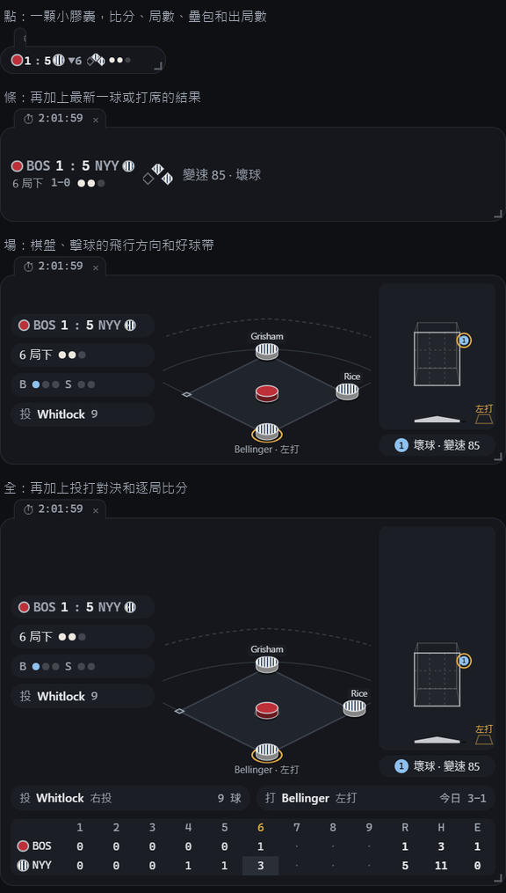

螢幕能分多少，就給它多少。
拉右下角，它就顯示多一點或少一點。
- 點
- 一顆小膠囊：比分、局數、壘包、出局數。
- 條
- 再加上球數和最新一球或打席的結果。
- 場
- 隊色棋子和壘上跑者的名字、擊球的飛行方向、好球帶裡每一球都有編號。
- 全
- 再加上投打對決和逐局比分。

瞄一眼就夠。
- 自己跟主隊。有比賽就跟直播，沒比賽就倒數下一場，附上預告先發。
- 一鍵藏起來。Ctrl+Alt+Shift+B 收起所有視窗；低調模式只剩一排數字，看起來不像在看球。
- 通知不搶焦點。只跳你選的事件，卡片在角落，你打字不會被打斷。音效預設關閉。
- 今天每一場。計分板抽屜、季後賽系列賽標示，另一場比賽後段膠著時會出現一個安靜的頁籤。
- 重播不爆雷。2023 年以後的比賽，保留每個打席的節奏；選場時不顯示比分。
- 滑鼠移過去就知道是誰。停在棋子上，顯示球員今天到這一刻的成績，以及例行賽、季後賽的累計。
- 打線與投手。選配的小視窗：攻方一到九棒、誰在打、下一棒是誰，以及守備方這場用過的投手。
- 你的樣子。平面或 2.5D，實底或透明。每個風格都是一個檔案，可以自己寫。
下載
Basesmall 是電腦版的程式。想要手機版的話，留個 Email。
程式還沒有程式碼簽章，Windows 可能會顯示「Windows 已保護您的電腦」：按「其他資訊」，再按「仍要執行」。需要 WebView2 Runtime，Windows 11 已內建。
最新版 。所有版本與更新紀錄在 GitHub。
想要手機版嗎？
現在只有電腦版。想要的人夠多，就認真考慮做手機版。留下 Email，有消息時（做或不做）寄一封信告訴你。
只存你的 Email、選的手機、語言和登記日期，放在 Cloudflare 上。只用來寄那一封信，寄完就刪除整份名單；不給任何人，也不寄別的東西。隨時可以在上面輸入 Email、按「刪除我的 Email」。
常見問題
這是 MLB 官方的嗎？
不是。Basesmall 是獨立的球迷專案，跟 MLB、MLBAM、大聯盟球員工會或任何球隊都沒有關係。比賽資料來自 MLB 公開的 Stats API，由你的電腦直接取得，僅供個人、非商業使用。
要錢嗎？有廣告嗎？
完全免費、開源（Apache License 2.0），沒有廣告，也沒有付費功能。
會播影片或轉播的聲音嗎？
不會。它只用幾顆棋子畫出壘上跑者、球數、出局數、比分、每一球的位置和擊球方向。音效預設關閉，只有幾個可以自己選的短提示音。
重播會不會爆雷？
不會。選場時不顯示比分；重播時球員成績、打線和投手都只算到畫面上那一刻。2023 年以後的比賽都能重播。
會收集我的資料嗎？
程式不會。不用帳號、沒有伺服器、不做分析；它只連 MLB 的比賽資料，以及每次啟動時問 GitHub 一次有沒有新版本（可以在設定關掉）。
Windows 為什麼說「已保護您的電腦」？
因為程式還沒有程式碼簽章，不代表有問題。按「其他資訊」，再按「仍要執行」。原始碼公開在 GitHub，安裝檔由 GitHub 從原始碼自動建置。
Mac 和 Linux 能用嗎？
可以，目前標為實驗性。Mac 版已通過 Apple 簽章與公證，Intel 和 Apple Silicon 共用一個檔案；Linux 有 AppImage 和 .deb。
怎麼更新？
安裝版有新版時，設定按鈕會出現一個小點，到設定按「更新」就會下載、安裝並重開，不按就不會動。免安裝版請下載新的 zip。
支援其他聯盟嗎？
目前只有 MLB，例行賽和季後賽都可以。其他聯盟目前沒有可以使用的公開逐球資料。
全部在你自己的電腦上跑。
程式不用帳號、沒有伺服器、沒有廣告、不做分析。比賽資料由你的電腦直接向 MLB 公開的 Stats API 取得；每次啟動時會向 GitHub 問一次有沒有新版本（可以在設定關掉），更新只在你按「更新」時才下載。